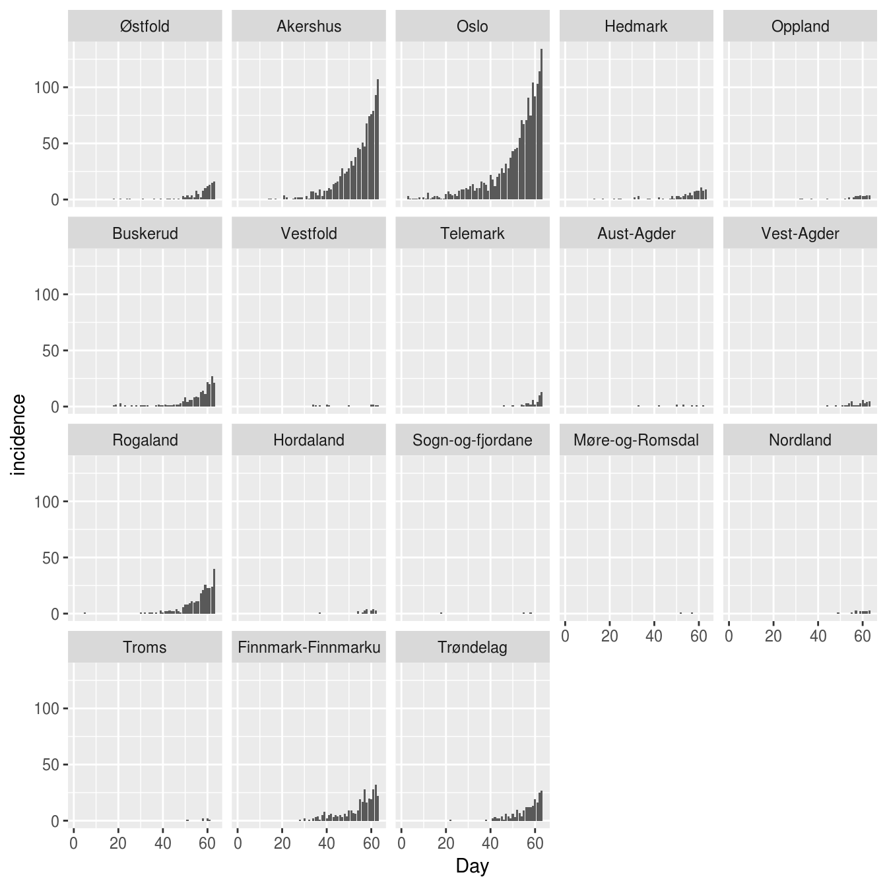
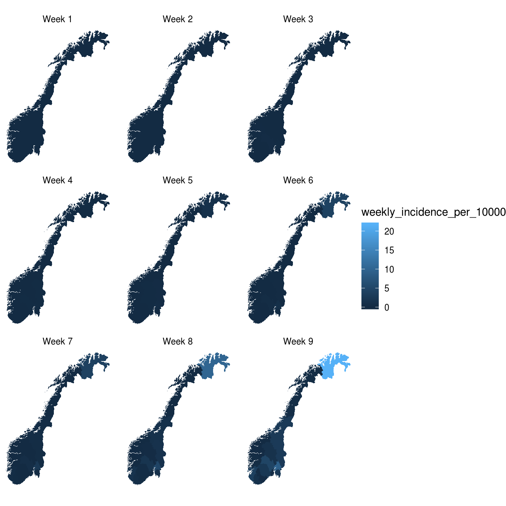

commuter_model.RmdThis model is a stochastic SEIIaR (susceptible, exposed, infectious, infectious asymptomatic, recovered) metapopulation model. Each location has a local infection system, while the locations are connected by people who commute each day. The model differentiates between day and night. During the day you can infect/be infected in the location where you work, while during the night you can infect/be infected in the location where you live. It is the same commuters who travel back and forth each day. At the start of a day, all commuters are sent to their work location, where they mix for 12 hours. The commuters are then sent to their respective home locations, where they mix for 12 hours. The model is based upon a published model.
We simulate:
set.seed(4)
d <- spread::commuter(
seiiar=spread::norway_seiiar_oslo_2017,
commuters=spread::norway_commuters_2017,
r0=1.6,
latent_period = 1.9,
infectious_period = 3.0,
asymptomatic_prob=0,
asymptomatic_relative_infectiousness=0,
N=1,
M=7*9
)
#> Starting to add edges, printing every 1000 edge
#> 1000 2000 3000 4000 5000 6000 7000 8000 9000 10000 11000 12000 13000 14000 15000 16000 17000 18000 19000 20000 21000 22000 23000 24000 25000 26000 27000 28000 Found 28923 edges
#> Running 1 simulations of 63 days
#>
#>
#> Finished all simulationsInspecting the data from Oslo:
d[location_code=="municip0301"]
#> location_code week day is_6pm S E I Ia R incidence pop
#> 1: municip0301 1 1 TRUE 666751 1 6 0 4 0 666762
#> 2: municip0301 1 2 TRUE 666749 3 2 0 8 0 666762
#> 3: municip0301 1 3 TRUE 666748 1 3 0 10 3 666762
#> 4: municip0301 1 4 TRUE 666747 1 3 0 11 1 666762
#> 5: municip0301 1 5 TRUE 666744 2 3 0 13 1 666762
#> 6: municip0301 1 6 TRUE 666742 3 2 0 15 1 666762
#> 7: municip0301 1 7 TRUE 666741 3 1 0 17 1 666762
#> 8: municip0301 2 8 TRUE 666741 1 2 0 18 2 666762
#> 9: municip0301 2 9 TRUE 666739 3 2 0 18 0 666762
#> 10: municip0301 2 10 TRUE 666736 4 4 0 18 2 666762
#> 11: municip0301 2 11 TRUE 666730 9 3 0 20 1 666762
#> 12: municip0301 2 12 TRUE 666729 4 8 0 21 6 666762
#> 13: municip0301 2 13 TRUE 666728 4 5 0 25 1 666762
#> 14: municip0301 2 14 TRUE 666724 5 8 0 25 2 666762
#> 15: municip0301 3 15 TRUE 666723 3 9 0 27 3 666762
#> 16: municip0301 3 16 TRUE 666719 5 9 0 29 3 666762
#> 17: municip0301 3 17 TRUE 666716 5 7 0 34 2 666762
#> 18: municip0301 3 18 TRUE 666713 4 8 0 37 1 666762
#> 19: municip0301 3 19 TRUE 666704 12 7 0 39 1 666762
#> 20: municip0301 3 20 TRUE 666702 9 11 0 40 5 666762
#> 21: municip0301 3 21 TRUE 666691 12 17 0 42 7 666762
#> 22: municip0301 4 22 TRUE 666689 8 17 0 48 5 666762
#> 23: municip0301 4 23 TRUE 666685 9 15 0 53 4 666762
#> 24: municip0301 4 24 TRUE 666674 16 15 0 57 5 666762
#> 25: municip0301 4 25 TRUE 666670 16 11 0 65 3 666762
#> 26: municip0301 4 26 TRUE 666665 15 14 0 68 8 666762
#> 27: municip0301 4 27 TRUE 666660 11 19 0 72 9 666762
#> 28: municip0301 4 28 TRUE 666648 15 23 0 76 9 666762
#> 29: municip0301 5 29 TRUE 666636 18 27 0 81 10 666762
#> 30: municip0301 5 30 TRUE 666620 25 30 0 87 9 666762
#> 31: municip0301 5 31 TRUE 666609 22 34 0 97 12 666762
#> 32: municip0301 5 32 TRUE 666593 25 36 0 108 14 666762
#> 33: municip0301 5 33 TRUE 666578 29 28 0 127 8 666762
#> 34: municip0301 5 34 TRUE 666569 26 25 0 142 10 666762
#> 35: municip0301 5 35 TRUE 666558 27 24 0 153 10 666762
#> 36: municip0301 6 36 TRUE 666539 29 32 0 162 16 666762
#> 37: municip0301 6 37 TRUE 666534 18 33 0 177 15 666762
#> 38: municip0301 6 38 TRUE 666517 22 36 0 187 13 666762
#> 39: municip0301 6 39 TRUE 666499 31 38 0 194 8 666762
#> 40: municip0301 6 40 TRUE 666480 28 45 0 209 22 666762
#> 41: municip0301 6 41 TRUE 666464 29 42 0 227 18 666762
#> 42: municip0301 6 42 TRUE 666435 44 37 0 246 12 666762
#> 43: municip0301 7 43 TRUE 666414 46 44 0 258 20 666762
#> 44: municip0301 7 44 TRUE 666382 53 56 0 271 23 666762
#> 45: municip0301 7 45 TRUE 666361 43 71 0 287 28 666762
#> 46: municip0301 7 46 TRUE 666321 60 71 0 310 24 666762
#> 47: municip0301 7 47 TRUE 666294 54 84 0 330 32 666762
#> 48: municip0301 7 48 TRUE 666249 72 85 0 356 28 666762
#> 49: municip0301 7 49 TRUE 666197 84 96 0 385 37 666762
#> 50: municip0301 8 50 TRUE 666151 88 111 0 412 43 666762
#> 51: municip0301 8 51 TRUE 666094 99 116 0 453 45 666762
#> 52: municip0301 8 52 TRUE 666037 108 131 0 486 46 666762
#> 53: municip0301 8 53 TRUE 665958 128 144 0 532 55 666762
#> 54: municip0301 8 54 TRUE 665887 126 163 0 586 71 666762
#> 55: municip0301 8 55 TRUE 665806 134 174 0 648 67 666762
#> 56: municip0301 8 56 TRUE 665706 161 180 0 715 71 666762
#> 57: municip0301 9 57 TRUE 665613 157 222 0 770 91 666762
#> 58: municip0301 9 58 TRUE 665512 170 231 0 849 75 666762
#> 59: municip0301 9 59 TRUE 665393 183 260 0 926 104 666762
#> 60: municip0301 9 60 TRUE 665254 225 263 0 1020 92 666762
#> 61: municip0301 9 61 TRUE 665136 239 281 0 1106 103 666762
#> 62: municip0301 9 62 TRUE 664982 268 310 0 1202 114 666762
#> 63: municip0301 9 63 TRUE 664799 307 341 0 1315 134 666762
#> location_code week day is_6pm S E I Ia R incidence popWe can merge in information about counties, and create county level data:
d <- merge(d,fhidata::norway_locations_current, by.x="location_code",by.y="municip_code")
county <- d[,.(
S=sum(S),
E=sum(E),
I=sum(I),
Ia=sum(Ia),
R=sum(R),
incidence=sum(incidence),
pop=sum(pop)
),
keyby=.(county_code,county_name,week,day,is_6pm)]
county[,county_name:=factor(county_name,levels=unique(fhidata::norway_locations_current[,c("county_code","county_name")]$county_name))]
county
#> county_code county_name week day is_6pm S E I Ia R
#> 1: county01 Østfold 1 1 TRUE 292893 0 0 0 0
#> 2: county01 Østfold 1 2 TRUE 292893 0 0 0 0
#> 3: county01 Østfold 1 3 TRUE 292893 0 0 0 0
#> 4: county01 Østfold 1 4 TRUE 292893 0 0 0 0
#> 5: county01 Østfold 1 5 TRUE 292893 0 0 0 0
#> ---
#> 1130: county50 Trøndelag 9 59 TRUE 456477 31 40 0 74
#> 1131: county50 Trøndelag 9 60 TRUE 456455 33 46 0 88
#> 1132: county50 Trøndelag 9 61 TRUE 456429 42 48 0 103
#> 1133: county50 Trøndelag 9 62 TRUE 456403 43 61 0 115
#> 1134: county50 Trøndelag 9 63 TRUE 456367 52 68 0 135
#> incidence pop
#> 1: 0 292893
#> 2: 0 292893
#> 3: 0 292893
#> 4: 0 292893
#> 5: 0 292893
#> ---
#> 1130: 13 456622
#> 1131: 19 456622
#> 1132: 16 456622
#> 1133: 25 456622
#> 1134: 27 456622We can produce a daily epicurve for each county:
p <- ggplot(county, aes(x=day, y=incidence))
p <- p + geom_col()
p <- p + facet_wrap(~county_name)
p <- p + scale_x_continuous("Day")
p
And we can produce weekly maps:
w <- county[,.(
incidence_weekly = sum(incidence),
pop = mean(pop)
), keyby=.(county_code, week)]
w[,weekly_incidence_per_10000 := 10000*incidence_weekly/pop]
w[,facet:=glue::glue("Week {week}",week=week)]
pd <- merge(
w,
fhidata::norway_map_counties,
by.x="county_code",
by.y="location_code",
allow.cartesian = T)
p <- ggplot(data=pd, mapping=aes( x = long, y = lat, group = group))
p <- p + geom_polygon(aes(fill=weekly_incidence_per_10000))
p <- p + facet_wrap(~facet)
p <- p + theme_void()
p <- p + coord_quickmap()
p